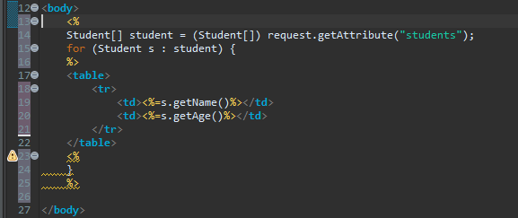

1 Rewrite the JSP page in the first demo
(forEach) to use scripting instead of the JSTL forEach

2 How do custom tags relate to JSTL?
JSTL provides new tags for JSPs that reduce
scripting. JSTL uses the custom tag api, but have become a standard
library, essentially a part of JSP language.
3 What is the role of the URI in the TLD and the
taglib directive?
"uri" element in the TLD is a unique name for the tag library. It
does not need to represent any actual location. It simply has to be a
name- the same name we use in the laglib directive.
4 What is a tag handler class?
A tage handler class is basically a JavaBeans class, it should
contain set of set method and set of get methods. All the
attributes of custom tag must be used as properties of data members
in tag handler class in the same order in which they appear. Every
tag handler class must extend a predefined class called
javax.servlet.jsp.target.TagSupport.
5 What is the role of attribute setters in a tag
handler class?
All propertied of a tag handler instance exposed
as attributes will be initialized by the container using the
appropriate setter methods before the instance can be used to perform
the action methods. it is responsibility of user code, be it
scriptlets, JavaBeans code, or code inside custom tags , to not
invoke these setter methods, as doing otherwise would infere with the
container knowledge.
6 What is the role of the doTag() method in a
tag handler class?
The SimpleTag interface provides a simple
doTag() mehtod, which is called one and only once for any given tag
invocation. All tag ligic, interaction, body evaluations etc. are to
be performed in this single method. Thus, simple tag handlers have
the squivalent power of body tag, but with a much simpler lifecycle
and interface.
7 What does the operation
getJspContext()getOut()write(“Hi Bob”) do when called in a doTag()
method?
We can not write it because it gives the error Type mismatch:
cannot convert from void to JspWriter It can be write it like:
JspWriter outa =getJspContext().getOut(); outa.write("Hi
Bob");
8 What does the operation
getJspBody()invoke(null) do when called in a doTag() method?
When getJspBody()invoke(null) is called , it is
the output resulting from the execution of the tag body's JSP content
that gets passed to the client, not the JSP code itself.